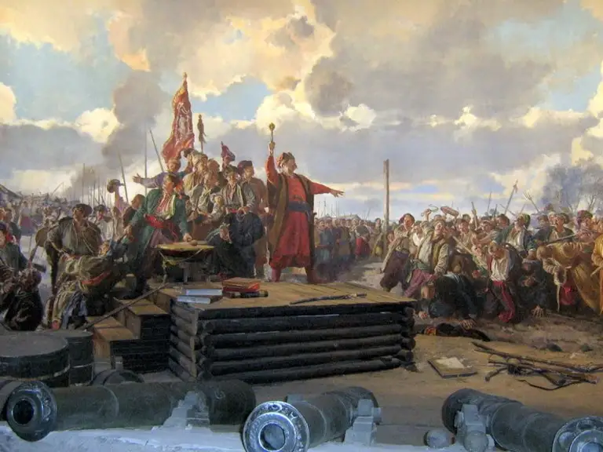

История Запорожья!
Основание
Датой основания Запорожья долгое время считался 1770 год — год закладки Александровской крепости. Однако в 2014 году депутаты горсовета утвердили датой основания Запорожья 952 год — год окончания трактата «Об управлении империей» византийского императора Константина VII Багрянородного «как первого письменного упоминания о существовавших городищах на обоих берегах Днепра и острове Хортица»[1][13]. На самом деле в указанном трактате не упоминаются городища, но упоминаются переправа Крария (отождествляемая с Кичкасской переправой) и остров Св. Григория (о. Хортица)[14]. Среди учёных нет консенсуса о том, какую дату считать датой основания Запорожья[15].
Благоприятный климат и удачное географическое положение Запорожья привлекали человека с незапамятных времён. Древнейшие стоянки первобытных людей в речной долине Днепра относятся к эпохе среднего палеолита. В 1929 году в черте современного города, рядом с бывшей деревней Вознесенка, был обнаружен археологический комплекс, представляющий наземное каменное сооружение с кладом конца VII — начала VIII веков, известным как «вознесенский клад». Комплекс связывают с хазарами, булгарским ханом Аспарухом (VII в.), князем Святославом Игоревичем (X в.). Одним из возможных мест гибели князя Святослава (972 год) считается остров Хортица.
Об острове Хортица было известно со времён Киевской Руси
Ниже острова по течению Днепра после порогов
восстанавливался водный путь из варяг в греки. Порожный участок реки от нынешнего города Днепр до Запорожья
растянулся почти на 75 км. Место, где сейчас находится плотина ДнепроГЭСа, было самым узким в низовьях
Днепра,
поэтому здесь была известная переправа, которой в разные исторические периоды пользовались скифы, печенеги и
половцы, а впоследствии — крымские татары, турки, славяне. Позднее это место контролировалось казаками
Запорожской Сечи . На острове Малая Хортица( остров Байда) в 1552 году волынским князем
Дмитрием
Вишневецким был заложен деревянно-земляной замок, который считается прототипом Запорожской Сечи.
Интерестные факты
Ошибочно бытует мнение, что в мирное время основной забавой казаков была пьянка. Конечно без крепких
напитков
обходилось не всегда, но все же казаки любили культурный отдых, они играли на различных музыкальных
инструментах, танцевали, пели песни и устраивали разнообразные показательные поединки в удовольствие себе и
окружающим. Также довольно много дел у казаков было и по хозяйству, ведь женщин на Сечи не было вообще.
В походах пить спитрное было категорически запрещено, а нарушение этого запрета приравнивалось к
предательству,
измене и могло караться смертью.
Конечно семейная жизнь казаков, была сложной, а иногда ее и вовсе не было, но казаки находили собратьев на
Сечи, для которых были готовы на все. Существуют мнения, что у казаков был особый обряд-ритуал, во время
которого воины-побратимы обменивались своими нательными крестиками, что олицетворяло верность друг другу.

Современное ЗАПОРОЖЬЕ
Запорожье — главная столица украинского казачества, а сегодня один из популярных туристических центров, включающая в себя множество захватывающих мест. Современный город привлекает гостей своими интересными местами.- Яркие места
- Местный колорит
- Прекрастная природа